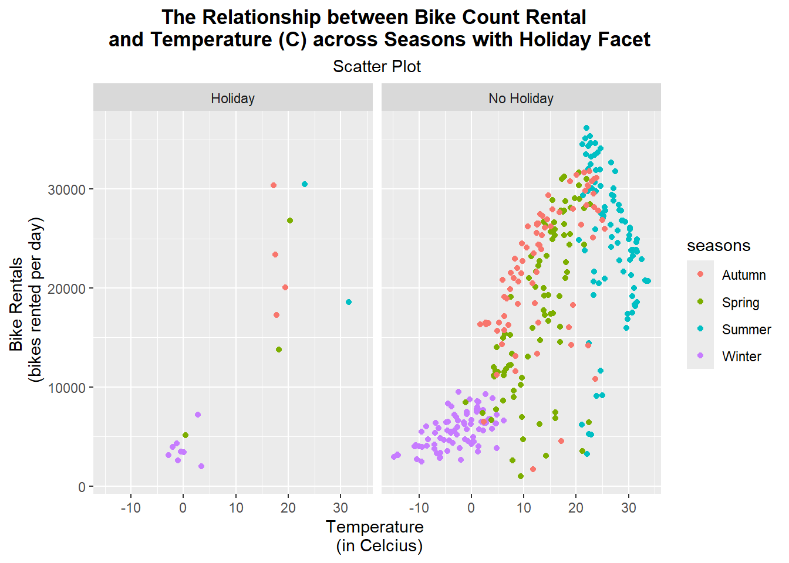
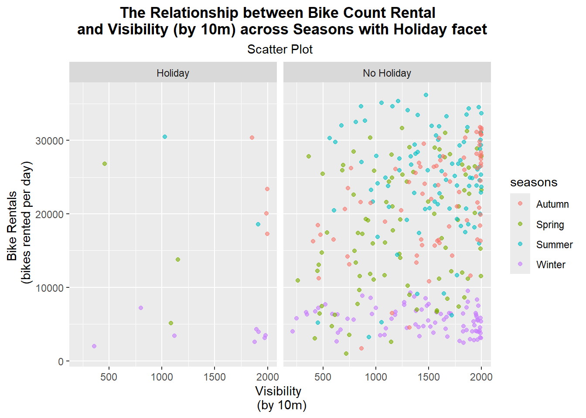
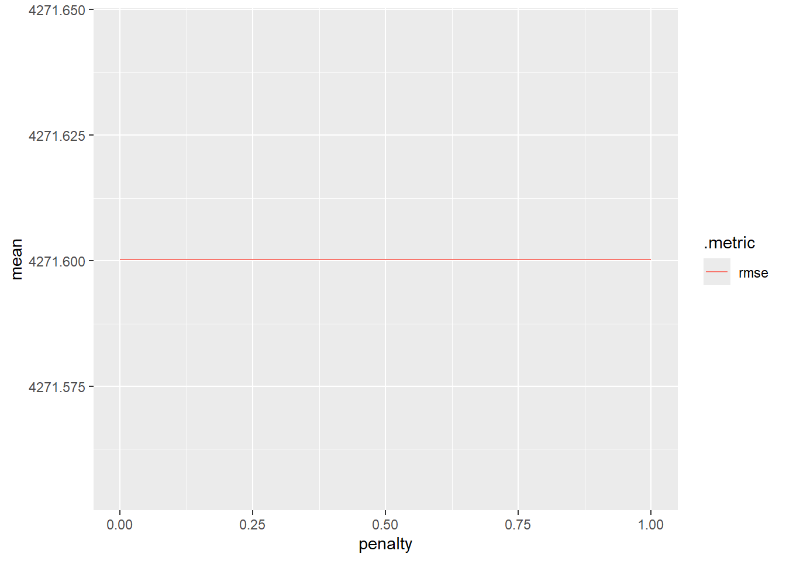
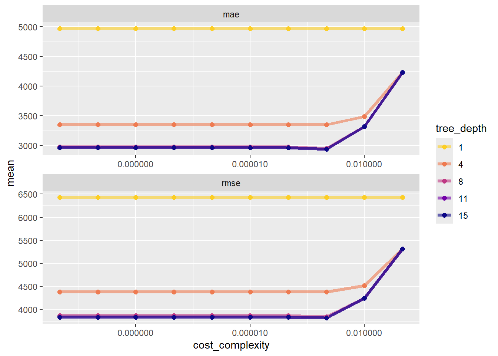
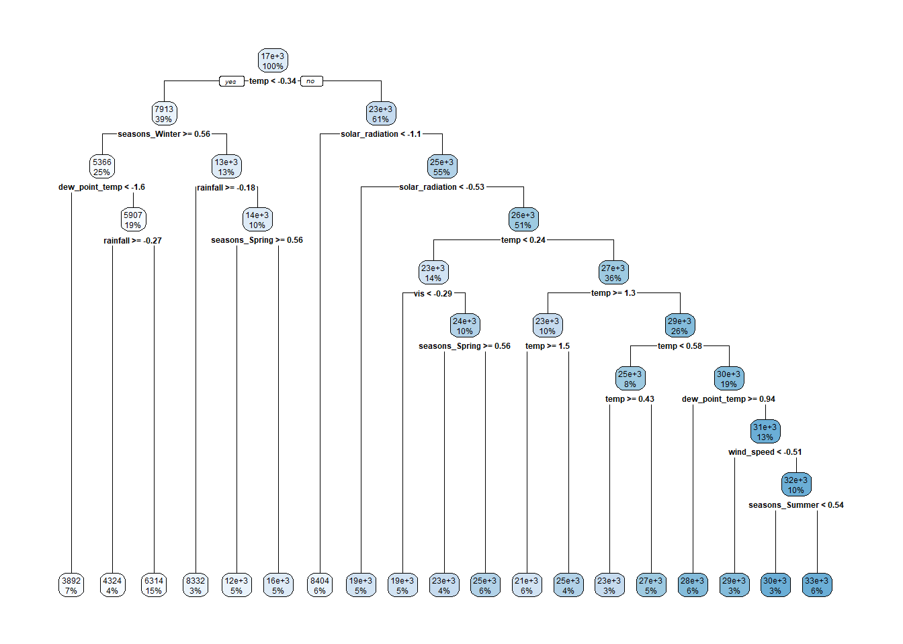

Some of this code was taken and inspired from the Homework 8 key to ensure the models will work because my code was having issues from before.
The purpose of this assignment is to create an EDA, exploratory data analysis, document for a data set about Seoul Bikes. We do this in order to better understand our data. The document will go through the following:
Checking the data.
Splitting the data.
Fitting MLR models.
Note: Items are numbered for ease of grading; regardless, the document is still to be read in narrative form.
Checking the data
Staring off, we’re going to install and load the necessary packages to create the EDA. Then we’ll read in the data.
# Loading in librarieslibrary(tidyverse)
Warning: package 'lubridate' was built under R version 4.4.2
── Attaching core tidyverse packages ──────────────────────── tidyverse 2.0.0 ──
✔ dplyr 1.1.4 ✔ readr 2.1.5
✔ forcats 1.0.0 ✔ stringr 1.5.1
✔ ggplot2 3.5.1 ✔ tibble 3.2.1
✔ lubridate 1.9.3 ✔ tidyr 1.3.1
✔ purrr 1.0.2
── Conflicts ────────────────────────────────────────── tidyverse_conflicts() ──
✖ dplyr::filter() masks stats::filter()
✖ dplyr::lag() masks stats::lag()
ℹ Use the conflicted package (<http://conflicted.r-lib.org/>) to force all conflicts to become errors
library(tidymodels)
Warning: package 'tidymodels' was built under R version 4.4.2
Warning: package 'dials' was built under R version 4.4.2
Warning: package 'infer' was built under R version 4.4.2
Warning: package 'modeldata' was built under R version 4.4.2
Warning: package 'parsnip' was built under R version 4.4.2
Warning: package 'recipes' was built under R version 4.4.2
Warning: package 'rsample' was built under R version 4.4.2
Warning: package 'tune' was built under R version 4.4.2
Warning: package 'workflows' was built under R version 4.4.2
Warning: package 'workflowsets' was built under R version 4.4.2
Warning: package 'yardstick' was built under R version 4.4.2
── Conflicts ───────────────────────────────────────── tidymodels_conflicts() ──
✖ scales::discard() masks purrr::discard()
✖ dplyr::filter() masks stats::filter()
✖ recipes::fixed() masks stringr::fixed()
✖ dplyr::lag() masks stats::lag()
✖ yardstick::spec() masks readr::spec()
✖ recipes::step() masks stats::step()
• Learn how to get started at https://www.tidymodels.org/start/
library(lubridate)library(glmnet)
Warning: package 'glmnet' was built under R version 4.4.2
Loading required package: Matrix
Attaching package: 'Matrix'
The following objects are masked from 'package:tidyr':
expand, pack, unpack
Loaded glmnet 4.1-8
library(rpart.plot)
Warning: package 'rpart.plot' was built under R version 4.4.2
Loading required package: rpart
Attaching package: 'rpart'
The following object is masked from 'package:dials':
prune
library(baguette)
Warning: package 'baguette' was built under R version 4.4.2
library(ranger)
Warning: package 'ranger' was built under R version 4.4.2
library(finalfit)
Warning: package 'finalfit' was built under R version 4.4.2
library(randomForest)
Warning: package 'randomForest' was built under R version 4.4.2
randomForest 4.7-1.2
Type rfNews() to see new features/changes/bug fixes.
Attaching package: 'randomForest'
The following object is masked from 'package:ranger':
importance
The following object is masked from 'package:dplyr':
combine
The following object is masked from 'package:ggplot2':
margin
library(vip)
Warning: package 'vip' was built under R version 4.4.2
Attaching package: 'vip'
The following object is masked from 'package:utils':
vi
library(readr)
# Read in databikes <- readr::read_csv("https://www4.stat.ncsu.edu/~online/datasets/SeoulBikeData.csv", locale =locale(encoding ="latin1"))
Rows: 8760 Columns: 14
── Column specification ────────────────────────────────────────────────────────
Delimiter: ","
chr (4): Date, Seasons, Holiday, Functioning Day
dbl (10): Rented Bike Count, Hour, Temperature(°C), Humidity(%), Wind speed ...
ℹ Use `spec()` to retrieve the full column specification for this data.
ℹ Specify the column types or set `show_col_types = FALSE` to quiet this message.
Next we’re going to check for missingness within our data set. As seen below, there are no columns missing any values or data, so we can move forward with continuing to check the data.
# Checked for missingness - to see if there are any missing values in the data set.missingnesscheck <-is.na(bikes) %>%colSums()missingnesscheck
Date Rented Bike Count Hour
0 0 0
Temperature(°C) Humidity(%) Wind speed (m/s)
0 0 0
Visibility (10m) Dew point temperature(°C) Solar Radiation (MJ/m2)
0 0 0
Rainfall(mm) Snowfall (cm) Seasons
0 0 0
Holiday Functioning Day
0 0
Now we’ll check the column types and their values to ensure it makes sense. We’ll do a basic summary of statistics for numeric columns and then check for the unique values of the categorical variables.
Using the str function, when checking for the column types and values, it does indicate that the variables contain the correct column types and values accordingly. There are a total of 14 variables: 10 are numeric types (Rented Bike Count, Hour, Temperature, Humidity, Wind speed, Visibility, Dew point temperature, Solar Radiation, Rainfall, Snowfall) and 4 are character types (Date, Seasons, Holidays, Functioning Day).
Using the summary function we selected numeric columns to create summary statistics for, which include the minimum, 1st quartile, median, mean, 3rd quartile, and maximum. These summary statistics give us some insight regarding weather conditions and total bike rentals.
Using as.list, we’re able to collect each unique value of the categorical variables.
Season levels contain the four seasons: Spring, Summer, Fall and Winter.
Holiday levels contain: Holiday and No Holiday.
Functioning Day levels contain: Yes and No.
# Checked for each variable's internal structure, denoting the data type of the variables.attributes(bikes)
# Created a basic summary of statistics for numeric columns by only selecting numerical variablessummary(select(bikes, -Date, -Seasons, -Holiday, -'Functioning Day'))
Rented Bike Count Hour Temperature(°C) Humidity(%)
Min. : 0.0 Min. : 0.00 Min. :-17.80 Min. : 0.00
1st Qu.: 191.0 1st Qu.: 5.75 1st Qu.: 3.50 1st Qu.:42.00
Median : 504.5 Median :11.50 Median : 13.70 Median :57.00
Mean : 704.6 Mean :11.50 Mean : 12.88 Mean :58.23
3rd Qu.:1065.2 3rd Qu.:17.25 3rd Qu.: 22.50 3rd Qu.:74.00
Max. :3556.0 Max. :23.00 Max. : 39.40 Max. :98.00
Wind speed (m/s) Visibility (10m) Dew point temperature(°C)
Min. :0.000 Min. : 27 Min. :-30.600
1st Qu.:0.900 1st Qu.: 940 1st Qu.: -4.700
Median :1.500 Median :1698 Median : 5.100
Mean :1.725 Mean :1437 Mean : 4.074
3rd Qu.:2.300 3rd Qu.:2000 3rd Qu.: 14.800
Max. :7.400 Max. :2000 Max. : 27.200
Solar Radiation (MJ/m2) Rainfall(mm) Snowfall (cm)
Min. :0.0000 Min. : 0.0000 Min. :0.00000
1st Qu.:0.0000 1st Qu.: 0.0000 1st Qu.:0.00000
Median :0.0100 Median : 0.0000 Median :0.00000
Mean :0.5691 Mean : 0.1487 Mean :0.07507
3rd Qu.:0.9300 3rd Qu.: 0.0000 3rd Qu.:0.00000
Max. :3.5200 Max. :35.0000 Max. :8.80000
# Obtained a list of unique levels/values for each categorical variableas.list(unique(bikes$Seasons))
Next we’ll convert the Date column into month/day/year to more easily read and viewed the data set and check for weird values.
# Using lubridate, we're reformmating the date to be m/d/y. First we use as.Date to parse the dates and allow them to be readable in R then we reformat them as m/d/y.bikes <- bikes %>%mutate(date = lubridate::dmy(Date)) %>%select(-Date)
# Check character columnsbikes$Seasons %>%unique()
[1] "Winter" "Spring" "Summer" "Autumn"
bikes$Holiday %>%unique()
[1] "No Holiday" "Holiday"
bikes$`Functioning Day`%>%unique()
[1] "Yes" "No"
Now we’re going to change the categorical variables to have a class of factor. This’ll allow us to use the factors/levels of these variables in statistical modeling for us to better understand how these different levels are affected. Also check character columns!
# Used mutate to change the categorical variable class characters to factors.bikes <- bikes %>%mutate(seasons =as.factor(Seasons),holiday =as.factor(Holiday),`fn_day`=as.factor(`Functioning Day`)) %>%select(-Seasons, -Holiday, -`Functioning Day`)
Last, we’re going rename all of the variables to have easy names to reference. This’ll make it easier for us to reference in our later queries due to the universal naming convention.
# Used clean_names function from the janitor package to lowercase and insert '_' names for all columns. bikes <- bikes %>%rename(`bike_count`=`Rented Bike Count`,`hour`="Hour","temp"=`Temperature(°C)`,"wind_speed"=`Wind speed (m/s)`,"humidity"=`Humidity(%)`,"vis"=`Visibility (10m)`,"dew_point_temp"=`Dew point temperature(°C)`,"solar_radiation"=`Solar Radiation (MJ/m2)`,"rainfall"="Rainfall(mm)","snowfall"=`Snowfall (cm)`)
When creating the first summary statistics for bike rentals, bike functioning day that equaled no contained no information to find a statistic on because no bikes were rented on those days. As a result, we created another summary filtering to only keep where bike functioning day equaled to yes. Removing some obsersvations from fn_day.
In order to simplify our previous analysis and initial bikes data set, we’re going to summarize across the hours so each day has one observation associated with it along with each weather condition. We’ll do this by summing up the total amount of bikes rented per hour per day to return This daily rental summary gives us a much better grasp of daily statistics compared to the initial bike data which filtered the data per each hour of the day for bike rentals, whereas this new summary combines all of those hour values into one day to give us a total amount of bikes rented per day. We continue to filter by a functioning day of yes so it doesn’t skew our summary of statistics regarding bike rental data and the rest of the numerical variables. Additionally, when filtering out functioning day ‘No’, the total data goes from 365 days to 353 days indicating that there were 12 days that no bikes were rented out to people.
`summarise()` has grouped output by 'date', 'seasons'. You can override using
the `.groups` argument.
bikes
# A tibble: 353 × 12
date seasons holiday bike_count temp humidity wind_speed vis
<date> <fct> <fct> <dbl> <dbl> <dbl> <dbl> <dbl>
1 2017-12-01 Winter No Holiday 9539 -2.45 45.9 1.54 1871.
2 2017-12-02 Winter No Holiday 8523 1.32 62.0 1.71 1471.
3 2017-12-03 Winter No Holiday 7222 4.88 81.5 1.61 456.
4 2017-12-04 Winter No Holiday 8729 -0.304 52.5 3.45 1363.
5 2017-12-05 Winter No Holiday 8307 -4.46 36.4 1.11 1959.
6 2017-12-06 Winter No Holiday 6669 0.0458 70.8 0.696 1187.
7 2017-12-07 Winter No Holiday 8549 1.09 67.5 1.69 949.
8 2017-12-08 Winter No Holiday 8032 -3.82 41.8 1.85 1872.
9 2017-12-09 Winter No Holiday 7233 -0.846 46 1.08 1861.
10 2017-12-10 Winter No Holiday 3453 1.19 69.7 2.00 1043.
# ℹ 343 more rows
# ℹ 4 more variables: dew_point_temp <dbl>, solar_radiation <dbl>,
# rainfall <dbl>, snowfall <dbl>
Below I have created the first plot, a scatter plot to look at the relationship between bike count rentals and temperature across seasons. The plot shows a strong positive correlation between these two variables, as one variable increases, the other increases. As temperature increases, bike rentals also increases. There are a cluster of data points where the temperature is below 10 degrees celcius with under 10,000 bike rentals per day; those data points most likely represent days colder days with potential less favorable biking conditions, as seen, denoted by the winter data points. Then there is a cluster of data points from 20 to 25 degrees celcius with more than 30,000 bike rentals a day; that cluster represents and shows that perhaps bike riders enjoy more warm weather, denoted by a mix of the Spring, Autumn, and Summer data points. Additionally, the data points are much more spread from 10 to 30 degrees celcius, perhaps indicating that people enjoy riding in more warm weather. However, there are also days where the temperatures are higher but bike rentals are low… this could be due to other weather conditions like some rainfall, wind speeds, holidays, etc.
# Created a scatterplot to exploreggplot(bikes,aes(x = temp, y = bike_count)) +geom_jitter(aes(color = seasons)) +ggtitle(label ="The Relationship between Bike Count Rental \n and Temperature (C) across Seasons with Holiday Facet",subtitle ="Scatter Plot") +theme(plot.title =element_text(hjust =0.5, face ="bold"),plot.subtitle =element_text(hjust =0.5)) +labs(x ="Temperature \n (in Celcius)", y ="Bike Rentals \n (bikes rented per day)") +scale_fill_discrete("Temperature") +facet_grid(~holiday)

For biking novices like myself, weather conditions that affect biking such as rainfall, snowfall, etc. are apparent, which is I’m interested in how visibility may affect bike rentals. Below I have created a plot between visibility and bike rentals across seasons and faceted by holidays. Upon observation there is a slight positive correlation on non-holidays with more rentals based on more visibility. For the holiday facet, there is not much of a pattern with rentals being spread across the entire range of visibility perhaps showcasing that visibility doesn’t affect bike rental rate as much on holidays. When looking at both holiday and non-holiday data, Summer and Autumn months produce a higher number of bike rentals compared to Winter and Spring months. Summer months show the highest number of rentals on non-holidays from 500m to 2,000m indicating that summer weather encourages biking regardless of the visibility. In conclusion, the higher the visibility, the more bike rentals there are as the plots showcase a strong positive relationship between the two variables.
ggplot(bikes,aes(x = vis, y = bike_count, color = seasons)) +geom_jitter(width =0.2, alpha =0.6) +facet_wrap(~ holiday) +ggtitle(label ="The Relationship between Bike Count Rental \n and Visibility (by 10m) across Seasons with Holiday facet",subtitle ="Scatter Plot") +theme(plot.title =element_text(hjust =0.5, face ="bold"),plot.subtitle =element_text(hjust =0.5)) +labs(x ="Visibility \n (by 10m)", y ="Bike Rentals \n (bikes rented per day)")

Next is the reported correlation matrix for all of the numeric variables; since there are so many, I will pick and choose a handful of correlations (relationship between variables) related to bike_count to explore. Looking at bike_count and its correlations in the first column, we can see that there are some strong positive correlations (as one variable increases, the other also increases), mainly bike_count and temperature with a correlation of 0.753 and bike_count and solar_radiation with a correlation of 0.736. From the first observation, we can see that higher temperatures are associated with a higher number of bike rentals; bike riders enjoy good weather and warmer temperatures when riding bikes. This supported our first scatterplot as we a strong positive correlation from the plot. The second correlation shows that higher solar radiation, i.e. more sun, also correlates with more bike rentals. Additionally, there are many weak negative correlations (as one variable increases, the other one one decreases) with bike_count such as: wind_speed_mean (-0.193), rainfall_mm_mean (-0.237), and snowfall_mm_mean (-0.265). Bike rental counts are expected to be negatively associated with these weather variables because high wind speeds, rainfall, and snowfall affect biking conditions and enviroments, and as a result tend to reduce bike rental rates.
# Created a filtered data frame to only show numeric variables to create correlation matrixbikes %>%select(where(is.numeric)) %>%cor()
For this next section, we’ll be splitting the data: 75% of the data into the training set and 25% of it into the test set. We’ll also stratify the data by seasons. Additionally, on the training set we’ll create a 10 fold CV split, which randomly splits the data into V groups of roughly equal size (“folds”).
# Split the data and created the 10 cv foldset.seed(11)bike_split <-initial_split(bikes, prop =0.75, strata = seasons)bike_train <-training(bike_split)bike_test <-testing(bike_split)cv_folds_10 <-vfold_cv(bike_train, v =10)
Fitting MLR Models
Now we’re going to work on creating the recipes!
First recipe!
Here we’re going to fix up the date variable a bit, standardize the numeric variables, and create dummy variables for the seasons, holiday, and our new day type!
# Creating the first reciperecipe_1 <-recipe(bike_count ~ ., data = bike_train) %>%step_date(date, features ="dow") %>%step_mutate(day_type =factor(if_else(date_dow %in%c("Sat", "Sun"), "Weekend", "Weekday"))) %>%step_rm(date, date_dow) %>%step_dummy(seasons, holiday, day_type) %>%step_normalize(all_numeric(), -bike_count)
Now we set up our linear model to use the lm engine and fit the models accordingly. As the final steps we’ll use our best model to fit the model on the entire training data set, compute the RMSE, and obtain the final model coefficient table.
# Specifying linear modelMLR_spec <-linear_reg() %>%set_engine("lm")# Creating work flows and only using recipe 1, fitting model using 10 folds CVMLR_CV_fit <-workflow() %>%add_recipe(recipe_1) %>%add_model(MLR_spec) %>%fit_resamples(cv_folds_10)# Assigning the best modelbest_model <-workflow() %>%add_recipe(recipe_1) %>%add_model(MLR_spec) %>%last_fit(bike_split)best_model %>%collect_metrics()
# A tibble: 2 × 4
.metric .estimator .estimate .config
<chr> <chr> <dbl> <chr>
1 rmse standard 3980. Preprocessor1_Model1
2 rsq standard 0.846 Preprocessor1_Model1
# Obtain final modelbest_model %>%extract_fit_parsnip() %>%tidy()
# A tibble: 250 × 7
penalty .metric .estimator mean n std_err .config
<dbl> <chr> <chr> <dbl> <int> <dbl> <chr>
1 1 e-10 rmse standard 4272. 10 168. Preprocessor1_Model001
2 1.10e-10 rmse standard 4272. 10 168. Preprocessor1_Model002
3 1.20e-10 rmse standard 4272. 10 168. Preprocessor1_Model003
4 1.32e-10 rmse standard 4272. 10 168. Preprocessor1_Model004
5 1.45e-10 rmse standard 4272. 10 168. Preprocessor1_Model005
6 1.59e-10 rmse standard 4272. 10 168. Preprocessor1_Model006
7 1.74e-10 rmse standard 4272. 10 168. Preprocessor1_Model007
8 1.91e-10 rmse standard 4272. 10 168. Preprocessor1_Model008
9 2.10e-10 rmse standard 4272. 10 168. Preprocessor1_Model009
10 2.30e-10 rmse standard 4272. 10 168. Preprocessor1_Model010
# ℹ 240 more rows
Now we’re going plot the values since we can’t really see them.
LASSO_grid |>collect_metrics() |>filter(.metric =="rmse") |>ggplot(aes(penalty, mean, color = .metric)) +geom_line()

Now we’ll pull out the best model using select_best() and finalize_workflow. We obtained our best LASSO model with a penalty of 0.0000000001, or 1e-10, for rmse and mae. Now we’re going to finish our training.
Now for the Regression Tree Model! First we’ll define our model and engine, create our workflow, and use CV to select our tuning parameters.
# Defining our model and enginereg_mod <-decision_tree(tree_depth =tune(),min_n =20,cost_complexity =tune()) %>%set_engine("rpart") %>%set_mode("regression")# Creating our workflowreg_wkf <-workflow() %>%add_recipe(recipe_1) %>%add_model(reg_mod)# Use CV to select our tuning parametersreg_tune <- reg_wkf %>%tune_grid(resamples = cv_folds_10,metrics =metric_set(rmse, mae))reg_tune %>%collect_metrics()
# A tibble: 20 × 8
cost_complexity tree_depth .metric .estimator mean n std_err .config
<dbl> <int> <chr> <chr> <dbl> <int> <dbl> <chr>
1 1.28e- 6 8 mae standard 2972. 10 217. Preprocess…
2 1.28e- 6 8 rmse standard 3867. 10 296. Preprocess…
3 5.47e-10 13 mae standard 2960. 10 222. Preprocess…
4 5.47e-10 13 rmse standard 3837. 10 302. Preprocess…
5 7.58e- 6 15 mae standard 2960. 10 222. Preprocess…
6 7.58e- 6 15 rmse standard 3837. 10 302. Preprocess…
7 6.86e- 8 6 mae standard 3011. 10 214. Preprocess…
8 6.86e- 8 6 rmse standard 3923. 10 284. Preprocess…
9 3.20e- 5 12 mae standard 2960. 10 222. Preprocess…
10 3.20e- 5 12 rmse standard 3837. 10 302. Preprocess…
11 2.96e- 2 2 mae standard 3654. 10 123. Preprocess…
12 2.96e- 2 2 rmse standard 4772. 10 135. Preprocess…
13 2.30e- 3 8 mae standard 3041. 10 210. Preprocess…
14 2.30e- 3 8 rmse standard 3907. 10 275. Preprocess…
15 6.76e- 9 5 mae standard 3063. 10 171. Preprocess…
16 6.76e- 9 5 rmse standard 3987. 10 227. Preprocess…
17 9.60e- 4 3 mae standard 3517. 10 167. Preprocess…
18 9.60e- 4 3 rmse standard 4650. 10 225. Preprocess…
19 2.87e- 9 10 mae standard 2966. 10 218. Preprocess…
20 2.87e- 9 10 rmse standard 3843. 10 299. Preprocess…
# Now we'll use grid_regular to set the number of valuesreg_grid <-grid_regular(cost_complexity(),tree_depth(),levels =c(10, 5))# Then we'll use tune_grid with this specified gridreg_fits <- reg_wkf %>%tune_grid(resamples = cv_folds_10,grid = reg_grid,metrics =metric_set(rmse, mae))reg_fits
Since reg_fits isn’t useful, we’ll use collect_metrics to combine the metrics across the folds. Then we’ll plot it to gain some insight.
# Collecting the metricsreg_fits %>%collect_metrics()
# A tibble: 100 × 8
cost_complexity tree_depth .metric .estimator mean n std_err .config
<dbl> <int> <chr> <chr> <dbl> <int> <dbl> <chr>
1 0.0000000001 1 mae standard 4969. 10 243. Preprocess…
2 0.0000000001 1 rmse standard 6432. 10 350. Preprocess…
3 0.000000001 1 mae standard 4969. 10 243. Preprocess…
4 0.000000001 1 rmse standard 6432. 10 350. Preprocess…
5 0.00000001 1 mae standard 4969. 10 243. Preprocess…
6 0.00000001 1 rmse standard 6432. 10 350. Preprocess…
7 0.0000001 1 mae standard 4969. 10 243. Preprocess…
8 0.0000001 1 rmse standard 6432. 10 350. Preprocess…
9 0.000001 1 mae standard 4969. 10 243. Preprocess…
10 0.000001 1 rmse standard 6432. 10 350. Preprocess…
# ℹ 90 more rows
# Plotting to gain insightreg_fits %>%collect_metrics() %>%mutate(tree_depth =factor(tree_depth)) %>%ggplot(aes(cost_complexity, mean, color = tree_depth)) +geom_line(size =1.5, alpha =0.6) +geom_point(size =2) +facet_wrap(~ .metric, scales ="free", nrow =2) +scale_x_log10(labels = scales::label_number()) +scale_colour_viridis_d(option ="plasma", begin = .9, end =0)
Warning: Using `size` aesthetic for lines was deprecated in ggplot2 3.4.0.
ℹ Please use `linewidth` instead.

Now we’ll sort by the smallest rmse value and select_best to grab the best model’s tuning parameter values. We end up with a value of 0.001 for rmse and mae. Then we’ll finalize our model.
# Arranged by meanreg_fits %>%collect_metrics() %>%filter(.metric =="rmse") %>%arrange(mean)
# A tibble: 50 × 8
cost_complexity tree_depth .metric .estimator mean n std_err .config
<dbl> <int> <chr> <chr> <dbl> <int> <dbl> <chr>
1 0.001 11 rmse standard 3817. 10 285. Preprocess…
2 0.001 15 rmse standard 3817. 10 285. Preprocess…
3 0.0000000001 11 rmse standard 3837. 10 302. Preprocess…
4 0.000000001 11 rmse standard 3837. 10 302. Preprocess…
5 0.00000001 11 rmse standard 3837. 10 302. Preprocess…
6 0.0000001 11 rmse standard 3837. 10 302. Preprocess…
7 0.000001 11 rmse standard 3837. 10 302. Preprocess…
8 0.00001 11 rmse standard 3837. 10 302. Preprocess…
9 0.0001 11 rmse standard 3837. 10 302. Preprocess…
10 0.0000000001 15 rmse standard 3837. 10 302. Preprocess…
# ℹ 40 more rows
# Selecting best tuning parametersreg_best <- reg_fits %>%select_best(metric ="rmse")reg_best
Now we’re going to obtain our best tuning parameter, which is 7.83e-10 for rmse and 0.0000215 for mae. We’re complete our workflow from our tuning and then finalize the model to be fit to bike_train.
# Obtain best tuningbag_best <- bag_fit %>%select_best(metric ="rmse")bag_best
# Finalizing workflowbag_final_wkf <- bag_wkf %>%finalize_workflow(bag_best)# Finalizing model and training on bike_trainbag_final <- bag_final_wkf %>%finalize_workflow(bag_best) %>%fit(bike_train)
Tuned Random Forest Model
Now we’re going to tune the random forest model, defining the model and engine, creating the workflow, and fitting our folds.
# Finalizing workflowrandom_final_wkf <- random_wkf %>%finalize_workflow(random_best)# Finalizing model and training on bike_trainrandom_final <- random_final_wkf %>%finalize_workflow(random_best) %>%fit(bike_train)
Model Fitting
Since we’ve finished tuning and fitting the models to the training sets, now we can fit it to the entire training data set and see how it predicts on the test set by doing last_fit for each model.
# A tibble: 2 × 4
.metric .estimator .estimate .config
<chr> <chr> <dbl> <chr>
1 rmse standard 3999. Preprocessor1_Model1
2 rsq standard 0.844 Preprocessor1_Model1
# Fitting Regression Tree modelreg_wkf %>%finalize_workflow(reg_best) %>%last_fit(bike_split) %>%collect_metrics()
# A tibble: 2 × 4
.metric .estimator .estimate .config
<chr> <chr> <dbl> <chr>
1 rmse standard 3096. Preprocessor1_Model1
2 rsq standard 0.905 Preprocessor1_Model1
# Fitting Bagged Tree modelbag_wkf %>%finalize_workflow(bag_best) %>%last_fit(bike_split) %>%collect_metrics()
# A tibble: 2 × 4
.metric .estimator .estimate .config
<chr> <chr> <dbl> <chr>
1 rmse standard 2831. Preprocessor1_Model1
2 rsq standard 0.923 Preprocessor1_Model1
# Fitting Random Forest modelrandom_wkf %>%finalize_workflow(random_best) %>%last_fit(bike_split) %>%collect_metrics()
# A tibble: 2 × 4
.metric .estimator .estimate .config
<chr> <chr> <dbl> <chr>
1 rmse standard 2649. Preprocessor1_Model1
2 rsq standard 0.933 Preprocessor1_Model1
Here are the following RMSEs: HW8 model (3980), LASSO (3999), Regression (3096), Bagged (3073), and Random Tree (2655). Random Tree model outperformed all of the models, so this would be the best overall model.
Now we’re going compare to see how it predicts on the test set for all models for both rmse and mae.
As previously seen, Random Tree performs the best here as well in both rmse and mae, 2621,59 and 2103.436, respectively.
Extract final model fits
Now we’re going to extract some model fits and report a summary for some of the models. For LASSO and our MLR, we’ll report the final coefficient tables.
For the regression tree model, we’ll give a plot of the final fit
# Final fit plot regression tree modelreg_final %>%extract_fit_engine() %>% rpart.plot::rpart.plot(roundint =FALSE)

For the bagged tree and random forest models, we’ll produce a variable importance plot
# Bagged tree variable plot# Random forest variable importance plot
Finally, we will fit the overall best model (Random Forest) to fit the entire data set! Now it’s been trained on the entire dataset!
# Fitting random forest to the entire data setrandom_best_overall <- random_final_wkf %>%finalize_workflow(random_best) %>%fit(bikes)random_best_overall
══ Workflow [trained] ══════════════════════════════════════════════════════════
Preprocessor: Recipe
Model: rand_forest()
── Preprocessor ────────────────────────────────────────────────────────────────
5 Recipe Steps
• step_date()
• step_mutate()
• step_rm()
• step_dummy()
• step_normalize()
── Model ───────────────────────────────────────────────────────────────────────
Ranger result
Call:
ranger::ranger(x = maybe_data_frame(x), y = y, mtry = min_cols(~12L, x), importance = ~"impurity", num.threads = 1, verbose = FALSE, seed = sample.int(10^5, 1))
Type: Regression
Number of trees: 500
Sample size: 353
Number of independent variables: 13
Mtry: 12
Target node size: 5
Variable importance mode: impurity
Splitrule: variance
OOB prediction error (MSE): 7428299
R squared (OOB): 0.9247746